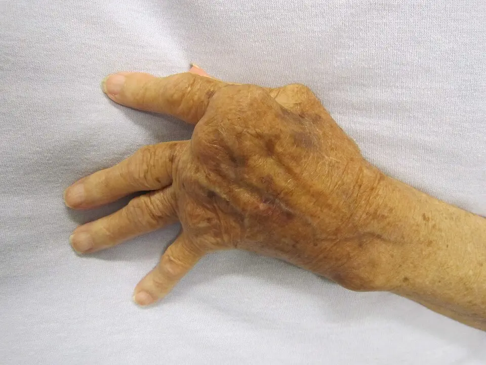

DX.10 — Subluxation atlanto-axoïdienne rhumatoïde 🚩 E7
La subluxation atlanto-axoïdienne rhumatoïde survient quand le pannus détruit le ligament transverse de l’atlasS1. Le médecin demande une radiographie dynamique devant une douleur du cou, puis une IRM (imagerie par résonance magnétique) devant un signe neurologique ou une image anormaleS1. La myélopathie ou un intervalle postérieur de 14 mm ou moins conduisent à la fusion, et le méthotrexate contrôle la maladieS6S2.
Ce cours DX.10 reprend les sources citées ; aucun médecin ne l’a encore validé cliniquement.
1. Définition
La subluxation atlanto-axoïdienne rhumatoïde se définit comme un glissement anormal de l’atlas (C1) sur l’axe (C2), dû à la destruction du ligament transverse par le pannus rhumatoïdeS1.
2. Épidémiologie (Suisse, puis Europe)
La polyarthrite rhumatoïde touche 0,5 à 1,0 % de la population européenneS3. Le rachis cervical se trouve atteint chez 42 % des patients dans les deux ans suivant le diagnosticS3. Les traitements de fond précoces ont réduit l’instabilité cervicale à 5 % pendant les dix premières années, selon le registre suédoisS3. La maladie occupe donc le dixième rang de fréquence du lot dans la Phase A, mais le rang E7 de l’ordre d’exclusion. Les chiffres de fréquence, les types d’instabilité et l’évolution naturelle détaillent ces données.
Fréquence : Europe, faute de chiffre suisse
| Donnée | Valeur | Lieu, période | Source |
|---|---|---|---|
| Prévalence de la polyarthrite rhumatoïde | 0,5 à 1,0 % de la population, deux femmes pour un homme | Europe | S3 |
| Atteinte cervicale précoce | 42 % dans les 2 ans suivant le diagnostic | Suède, littérature citée | S3 |
| Progression vers l’instabilité atlanto-axoïdienne | 10 à 25 % des patients | Suède, littérature citée | S3 |
| Instabilité sous traitement de fond précoce | 5 % dans les 10 premières années | Suède, littérature citée | S3 |
| Déformation cervicale à 10 ans | 108 patients sur 272, soit 40 % | Pays-Bas, étude BeSt (étude néerlandaise de stratégies thérapeutiques) | S4 |
| Subluxation de 3 mm ou plus en flexion | 24 % des patients | Pays-Bas, étude BeSt | S4 |
| Subluxation de 5 mm ou plus en flexion | 3 % des patients | Pays-Bas, étude BeSt | S4 |
| Anomalies radiologiques cervicales | Plus de 80 % des patients selon des données récentes | Pologne, littérature citée | S5 |
Aucune source suisse lue ne chiffre cette complication, si bien que les cohortes suédoise et néerlandaise servent de repère par transpositionS3S4.
Types d’instabilité et leur part
| Type | Part mesurée | Population | Source |
|---|---|---|---|
| Subluxation atlanto-axoïdienne parmi les instabilités | 10 à 88 % selon les études | Littérature citée | S5 |
| Subluxation sous-axiale | 20 % | Littérature citée | S5 |
| Tassement crânien | 11 % | Littérature citée | S5 |
| Instabilité horizontale C1–C2 opérée | 62 patients sur 176, soit 35 % | Suède, Swespine | S3 |
| Instabilité verticale entre occiput (C0) et axe, opérée | 48 patients, soit 27 % | Suède, Swespine | S3 |
| Instabilité sous-axiale opérée | 19 patients, soit 11 % | Suède, Swespine | S3 |
| Instabilité combinée opérée | 43 patients, soit 24 % | Suède, Swespine | S3 |
Dans le registre suédois, l’âge moyen à l’opération atteignait 67 ans, et 81 % des opérés étaient des femmesS3.
Évolution naturelle et effet du traitement
| Observation | Valeur | Population | Source |
|---|---|---|---|
| Instabilité apparue dans les 5 ans suivant le diagnostic | 43,6 % des patients | Étude citée par la revue | S6 |
| Passage à l’impression basilaire en dix ans | 22,8 % des instabilités atlanto-axoïdiennes | Étude citée par la revue | S6 |
| Rémission obtenue sous stratégie par objectif | Jusqu’à 50 % des patients | Pays-Bas, étude BeSt | S4 |
| Rémission sans médicament | Jusqu’à 29 % des patients | Pays-Bas, étude BeSt | S4 |
| Fusions cervicales pour polyarthrite de 1998 à 2021 | Baisse de 0,13 intervention par an | Littérature citée par la revue | S6 |
| Âge moyen au diagnostic de l’atteinte cervicale | 48 à 66 ans | Littérature citée par la revue | S6 |
Une fois installée, l’atteinte structurelle peut progresser malgré les traitements biologiques, ce qui maintient la nécessité d’une surveillanceS6.
3. Physiopathologie
Les articulations du rachis cervical, riches en synoviale, subissent la même inflammation que les articulations périphériquesS5. Le pannus détruit le ligament transverse et les surfaces articulaires, puis l’atlas glisse en avant ou le crâne s’affaisse sur le rachisS1S6. L’anatomie annotée situe ces structures, et les mécanismes relient chaque lésion à son risque.
Atlas, axe et ligament transverse
Atlas et axe. OpenStax représente en couleurs l’atlas vu d’en haut, l’axe et sa dent, structures au cœur de la subluxation rhumatoïdeS7.

Le lecteur recherche d’abord seul la dent de l’axe, le ligament transverse, l’arc antérieur et le canal situé derrière la dent.
- La dent de l’axe s’articule avec l’arc antérieur de l’atlas ; elle glisse en arrière quand le ligament cèdeS7S1.
- Le ligament transverse maintient la dent ; le pannus rhumatoïde le détruitS7S1.
- L’arc antérieur de l’atlas sert de repère pour mesurer l’intervalle antérieur avec la dentS7S5.
- L’espace situé derrière la dent contient la moelle ; l’intervalle postérieur mesure cette réserveS7S6.
- La dent de l’axe vue de face peut s’éroder, ce qui fausse certains indices radiologiquesS7S6.
La moelle occupe l’anneau de l’atlas derrière la dent, si bien qu’un glissement de quelques millimètres suffit à la menacerS6S7.
Lésions, mécanismes et risques
| Lésion | Mécanisme | Risque | Source |
|---|---|---|---|
| Subluxation atlanto-axoïdienne antérieure | Destruction du ligament transverse par le pannus | Compression de la moelle haute | S1S6 |
| Impression basilaire ou tassement crânien | Érosion des articulations atlanto-occipitales et atlanto-axoïdiennes | Atteinte du tronc cérébral, mort subite | S6S3 |
| Pseudo-stabilisation | La subluxation diminue pendant que la dent migre vers le trou occipital | Pronostic plus grave malgré une image trompeuse | S6 |
| Subluxation sous-axiale | Atteinte tardive des articulaires, déformation en marches d’escalier | Myélopathie, mortalité élevée | S3 |
| Compression des racines C1 et C2 | Glissement et pannus | Douleur occipito-cervicale | S6 |
| Atteinte vertébrale | Compression de l’artère vertébrale | Insuffisance vertébrobasilaire | S6 |
L’articulation atlanto-axoïdienne assure 50 % de la rotation du cou sans butée osseuse naturelle, ce qui explique sa vulnérabilitéS5.
4. Démarche diagnostique
La rhumatologie genevoise recommande une radiographie dynamique chez tout patient atteint de polyarthrite qui souffre du couS1. Elle demande une IRM lorsque des signes neurologiques apparaissent ou lorsque la radiographie se révèle anormaleS1. Le médecin mesure ensuite les intervalles et les indices, puis il décide entre surveillance, traitement de fond renforcé et chirurgieS6S2. Les sept étapes et le degré d’urgence organisent ce raisonnement, du terrain rhumatoïde à la décision.
Étapes de la démarche, du terrain à la décision
| Étape | Action | Seuil ou critère | Conduite | Source |
|---|---|---|---|---|
| 1. Reconnaître le terrain | Polyarthrite séropositive, érosive, ancienne | Facteur rhumatoïde et anticorps anti-CCP positifs, érosions | Penser au rachis cervical | S1 |
| 2. Interroger | Douleur occipitale, signes neurologiques | Douleur du cou chez 40 à 80 % des patients | Examen neurologique complet | S6 |
| 3. Examiner | Signes de myélopathie, nerfs crâniens, sphincters | Tout signe positif | IRM et avis chirurgical | S1S6 |
| 4. Radiographier | Face, profil neutre, flexion-extension, bouche ouverte | Douleur cervicale ou intubation prévue | Mesurer les intervalles | S6S1 |
| 5. Compléter | IRM, scanner | Radiographie anormale ou signes neurologiques | Évaluer moelle, pannus, os | S1S6 |
| 6. Décider | Chirurgie ou surveillance | Myélopathie, intervalle postérieur de 14 mm ou moins | Avis neurochirurgical | S6 |
| 7. Traiter la maladie | Traitement de fond | Activité inflammatoire | Stratégie EULAR (Alliance européenne des associations de rhumatologie) | S2 |
Niveau d’urgence selon le tableau
| Situation | Délai | Conduite | Source |
|---|---|---|---|
| Déficit neurologique d’apparition rapide, atteinte du tronc | Immédiat | Immobilisation, IRM, avis chirurgical urgent | S6 |
| Signes de myélopathie stables | Rapide | IRM et avis chirurgical | S1S6 |
| Anesthésie générale prévue | Avant l’intervention | Radiographies dynamiques, intubation par fibroscopie si instabilité | S6 |
| Douleur cervicale isolée | Programmé | Radiographie dynamique | S1 |
| Patient asymptomatique à haut risque | Programmé | Imagerie de base et surveillance | S6 |
Une partie des patients reste sans symptôme malgré l’instabilité, ce qui justifie l’imagerie avant une intubationS6.
5. Anamnèse ciblée et drapeaux rouges
L’anamnèse précise l’ancienneté de la polyarthrite, la séropositivité, les érosions et la corticothérapie, car ces éléments prédisent l’instabilitéS1S6. Elle recherche ensuite les symptômes de compression médullaire, du tronc cérébral et de l’artère vertébraleS6. L’entretien s’organise autour des questions ciblées, des facteurs de risque et des drapeaux rouges.
Questions ciblées et leur portée
| Question | Réponse évocatrice | Portée | Source |
|---|---|---|---|
| Depuis quand la polyarthrite ? | Maladie ancienne | Facteur de risque | S1S6 |
| Facteur rhumatoïde, anti-CCP ? | Positifs | Forme séropositive à risque | S1 |
| Corticothérapie prolongée ? | Oui | Facteur de risque et de progression | S6 |
| Chirurgie articulaire, destructions périphériques ? | Oui | Maladie avancée | S6 |
| Douleur du cou, de l’occiput, de l’oreille ? | Douleur profonde haute | Compression de C2 et du nerf grand occipital | S6S4 |
| Décharge électrique à la flexion du cou ? | Oui | Signe de Lhermitte, myélopathie | S6 |
| Symptômes soulagés en extension ? | Oui | Réduction spontanée, articulation instable | S6 |
| Maladresse des mains, marche instable ? | Oui | Myélopathie | S1S6 |
| Anesthésie ou intubation prévue ? | Oui | Imagerie préalable | S6 |
Facteurs de risque et facteurs protecteurs mesurés
| Facteur | Effet | Population | Source |
|---|---|---|---|
| Sexe masculin | Prédispose à l’instabilité | Littérature citée par la revue | S6 |
| Maladie ancienne | Prédispose à l’instabilité | Littérature citée par la revue | S6 |
| Corticothérapie antérieure | Prédispose à l’instabilité et à sa progression | Littérature citée par la revue | S6 |
| Chirurgie articulaire, destructions périphériques | Prédisposent à l’instabilité | Littérature citée par la revue | S6 |
| Stade de Steinbrocker III ou IV | Prédispose à l’instabilité | Littérature citée par la revue | S6 |
| Absence de corticoïde et de biologique, CRP (protéine C réactive) inférieure à 1,0 mg/dl | Associées à l’absence d’instabilité après plus de dix ans | Littérature citée par la revue | S6 |
| Polyarthrite sans atteinte cervicale initiale | 43,6 % développent une instabilité en environ 6 ans | Cohorte prospective citée | S6 |
| Trois poussées ou plus | Rapport de cotes de 0,338, non significatif, pour la déformation à 10 ans | Pays-Bas, étude BeSt | S4 |
Ces facteurs décrivent surtout une maladie sévère et longtemps active, si bien que le dépistage cible ce profil en prioritéS6S4.
Drapeaux rouges et conduite
| Drapeau rouge | Signification | Conduite | Source |
|---|---|---|---|
| Troubles de la déglutition, de la parole, diplopie | Atteinte des noyaux des nerfs crâniens | IRM et avis urgent | S6 |
| Ataxie, vertige, syncope | Insuffisance vertébrobasilaire | IRM et avis urgent | S6 |
| Troubles respiratoires | Compression bulbaire | Urgence vitale | S6 |
| Troubles sphinctériens | Myélopathie avancée | IRM et avis urgent | S1 |
| Paresthésies des extrémités | Myélopathie | IRM | S1 |
La compression bulbaire peut entraîner une mort subite par atteinte du centre respiratoire, d’où l’urgence de ces signesS6.
6. Examen physique ciblé, région par région
L’examen commence par les mains et les grosses articulations, puis il progresse vers le cou, la moelle, le tronc cérébral et les voies aériennesS1S6. Chaque région a sa fenêtre : mains et articulations, cou, moelle, tronc cérébral et nerfs crâniens, sphincters et voies aériennes.
Mains et articulations périphériques
Main rhumatoïde. Cette photographie clinique en couleurs montre une main sévèrement atteinte par la polyarthrite rhumatoïdeS8.

Le lecteur recherche d’abord seul la déviation des doigts, la tuméfaction des articulations de la base des doigts et le dos du poignet.
Une destruction périphérique avancée accompagne souvent l’instabilité cervicale, ce qui impose d’examiner le cou chez ce patientS6.
Cou et rachis cervical
| Geste | Anomalie | Interprétation | Source |
|---|---|---|---|
| Palpation et percussion | Sensibilité au niveau de C2 | Atteinte haute | S1 |
| Mobilité active | Mobilité douloureuse en fin de course | Atteinte articulaire | S1 |
| Rotation | Rotation normale supérieure à 60 %, dont 50 % à C1–C2 | Référence pour juger la perte de rotation | S1 |
| Flexion du cou | Décharge électrique | Signe de Lhermitte | S6 |
L’examen ne doit pas forcer la flexion lorsque l’instabilité est suspectée ; cette prudence reste une déduction tirée du mécanisme de compressionS6.
Moelle cervicale
| Recherche | Anomalie | Interprétation | Source |
|---|---|---|---|
| Sensibilité des extrémités | Paresthésies | Myélopathie | S1 |
| Réflexes | Hyperréflexie, clonus | Atteinte pyramidale | S1S6 |
| Réflexe cutané plantaire | Signe de Babinski | Atteinte pyramidale | S1S6 |
| Signe de Hoffmann | Positif | Myélopathie | S6 |
| Marche | Instabilité | Atteinte des voies longues, marqueur de sévérité | S6 |
Voies aériennes et mâchoire
| Recherche | Anomalie | Conduite | Source |
|---|---|---|---|
| Ouverture buccale, articulation temporo-mandibulaire | Atteinte rhumatoïde | Intubation difficile prévisible | S6 |
| Instabilité connue | Présente | Intubation par fibroscopie | S6 |
La revue citée propose l’intubation par fibroscopie, car elle limite le traumatisme et l’obstruction des voies aériennes à l’extubationS6.
7. Approche syndromique
Le syndrome haut atlanto-axoïdien associe douleur occipito-cervicale, signes médullaires et parfois signes du tronc cérébral chez un patient atteint de polyarthriteS6S1. La rhumatologie genevoise place la polyarthrite parmi les causes de cervicalgie inflammatoire haute, avec la spondylodiscite, la chondrocalcinose et la pseudopolyarthrite rhizoméliqueS1. Le tableau différentiel distingue la subluxation rhumatoïde des autres douleurs cervicales hautes.
Diagnostics voisins et arguments
| Diagnostic | Argument pour | Argument contre la subluxation rhumatoïde | Source |
|---|---|---|---|
| Fracture du rachis cervical (DX.4) | Douleur haute | Traumatisme | S1 |
| Spondylodiscite (DX.8) | Cervicalgie inflammatoire | Fièvre, atteinte du disque à l’IRM | S1 |
| Myélopathie cervicale dégénérative (DX.3) | Signes médullaires | Absence de polyarthrite, sténose dégénérative | S1 |
| Syndrome de la dent couronnée (DX.9) | Douleur haute inflammatoire | Calcifications autour de la dent, chondrocalcinose | S1 |
| Pseudopolyarthrite rhizomélique | Douleur inflammatoire | Ceintures sans érosion cervicale | S1 |
| Tumeur, ostéome ostéoïde | Douleur nocturne | Imagerie osseuse | S1 |
| Cervicalgie commune (DX.1) | Douleur du cou | Douleur mécanique, radiographie dynamique normale | S1 |
Le terrain rhumatoïde ancien et la mesure des intervalles tranchent, car la clinique seule ne sépare pas ces causesS1S6.
8. Diagnostic positif et critères
Le diagnostic associe une polyarthrite connue, une instabilité mesurée sur les radiographies dynamiques et, en cas de signes neurologiques, une compression visible à l’IRMS1S6. Les seuils varient entre les sources, si bien que le compte rendu doit nommer la mesure et le seuil retenusS3S5S6. Les seuils de l’instabilité horizontale et les seuils verticaux et sous-axiaux chiffrent cette lecture.
Instabilité horizontale C1–C2 : mesures et seuils
| Mesure | Seuil | Interprétation | Source |
|---|---|---|---|
| Intervalle atlas-dent antérieur | Moins de 3 mm | Normal chez l’adulte | S3 |
| Intervalle atlas-dent antérieur | 3,0 mm ou plus | Instabilité atlanto-axoïdienne | S5 |
| Intervalle atlas-dent antérieur | Plus de 5 mm en flexion-extension | Instabilité selon la revue citée | S6 |
| Intervalle atlas-dent antérieur | Environ 8 à 10 mm | Subluxation avancée, compromission neurologique plus probable | S6 |
| Intervalle atlas-dent antérieur | Plus de 10 mm | Perte des ligaments transverse, alaires et apical | S6 |
| Intervalle atlas-dent postérieur | Plus de 13 mm | Normal | S3 |
| Intervalle atlas-dent postérieur | 14 mm ou moins | Compression médullaire, fusion indiquée | S6 |
L’intervalle postérieur estime directement la place laissée à la moelle, ce qui le rend plus utile que l’intervalle antérieur pour déciderS6.
Instabilité verticale et sous-axiale : mesures et seuils
| Mesure | Seuil pathologique | Interprétation | Source |
|---|---|---|---|
| Ligne de McGregor | Pointe de la dent à plus de 4,5 mm au-dessus | Impression basilaire | S6 |
| Distance de Ranawat | Moins de 13 mm ; moins de 15 mm chez la femme | Tassement crânien | S6 |
| Distance de Redlund-Johnell | Moins de 29 mm ; moins de 34 mm chez la femme | Tassement crânien | S6 |
| Combinaison des critères | Sensibilité supérieure à 90 % | Imagerie en coupe si positif | S6 |
| Indice atlanto-axoïdien vertical au scanner | Normal à 0,80, de 0,76 à 0,85 | Instabilité verticale si anormal | S3 |
| Glissement sous-axial | Plus de 3,5 mm, ou 2 mm ou plus selon certains | Subluxation sous-axiale | S6 |
| Antérolisthésis en position assise | Plus de 2 mm | Instabilité sous-axiale | S3 |
| Angle cervico-médullaire à l’IRM | Moins de 135°, normal de 135 à 175° | Tassement crânien, coudure du tronc cérébral | S6 |
Aucun critère radiographique simple ne suffit pour dépister le tassement crânien, ce qui impose le scanner ou l’IRM lorsqu’il est suspectéS6.
9. Examens complémentaires
Les examens confirment la polyarthrite, mesurent l’instabilité et recherchent la compression nerveuseS1S6. Les analyses biologiques, les examens d’imagerie et l’interprétation de l’IRM détaillent chaque examen.
Analyses biologiques : indication et interprétation
| Examen | Indication | Interprétation | Source |
|---|---|---|---|
| Facteur rhumatoïde, anticorps anti-CCP | Confirmation du terrain | Positifs : forme séropositive à risque | S1 |
| CRP, vitesse de sédimentation | Activité inflammatoire | CRP inférieure à 1,0 mg/dl associée à l’absence d’instabilité à long terme | S1S6 |
| Hémogramme, enzymes hépatiques, fonction rénale | Avant le méthotrexate | Bilan de sécurité de l’AIPS (information professionnelle suisse) | S9 |
Imagerie : indication, seuil et conduite
| Examen | Indication | Ce qu’il montre | Conduite | Source |
|---|---|---|---|---|
| Radiographies des mains et des pieds | Bilan de la polyarthrite | Érosions | Évaluer la sévérité | S1 |
| Échographie des poignets, mains, genoux | Bilan de la polyarthrite | Synovites | Évaluer l’activité | S1 |
| Radiographies cervicales dynamiques | Douleur du cou, signes neurologiques, intubation prévue | Intervalles, indices, glissement | Première intention | S1S6 |
| Cliché bouche ouverte | Même indication | Rapports atlas-axe | Compléter le bilan | S6 |
| IRM cervicale | Signes neurologiques ou radiographie anormale | Pannus, moelle, angle cervico-médullaire | Décision chirurgicale | S1S6 |
| Scanner | Détail osseux, planification des vis | Érosions, masses latérales | Préparer la fixation | S6 |
| Scanner dynamique | Instabilité occulte | Glissement non vu en radiographie | Limité par l’irradiation | S6 |
Lecture de l’IRM
| Signe | Valeur | Interprétation | Source |
|---|---|---|---|
| Pannus péri-odontoïdien | Signal intermédiaire à bas en T1 (temps de relaxation longitudinal), hypersignal en T2 (temps de relaxation transversal) | Synovite active autour de la dent | S6 |
| Hypersignal T2 de la moelle | Présent | Œdème ou myélomalacie, récupération moins bonne | S6 |
| Angle cervico-médullaire | Moins de 135° | Tassement crânien, myélopathie | S6 |
| Angle cervico-médullaire | Plus de 135°, sans hypersignal | Meilleur pronostic | S6 |
L’IRM reste donc l’examen qui relie l’image à la souffrance médullaire, alors que la radiographie mesure surtout le glissementS6.
10. Arbre décisionnel
L’arbre part d’un patient atteint de polyarthrite qui souffre du cou ou doit être intubé, puis il répond à la neurologie, aux mesures et au traitementS1S6. L’arbre en tableau pose sept questions successives, de l’atteinte du tronc cérébral jusqu’à l’anesthésie programmée.
Arbre décisionnel en tableau
| Question | Si oui | Si non | Source |
|---|---|---|---|
| Signes du tronc cérébral ou déficit rapide ? | Immobilisation, IRM, avis chirurgical urgent | Question suivante | S6 |
| Signes de myélopathie ? | IRM, puis chirurgie | Radiographies dynamiques | S1S6 |
| Radiographie anormale ? | IRM et scanner | Surveillance et traitement de fond | S1 |
| Intervalle postérieur de 14 mm ou moins, ou angle inférieur à 135° ? | Fusion | Question suivante | S6 |
| Instabilité progressive ou douleur rebelle liée à l’instabilité ? | Chirurgie | Surveillance | S6 |
| Polyarthrite active ? | Méthotrexate et glucocorticoïde, puis stratégie par étapes | Poursuite du traitement de fond | S2 |
| Anesthésie prévue ? | Imagerie préalable, fibroscopie si instabilité | Suivi habituel | S6 |
11. Prise en charge selon les recommandations suisses
11.A But. Le traitement vise à prévenir la myélopathie et la mort subite, à soulager la douleur et à contrôler l’inflammation rhumatoïdeS6S2. La chirurgie donne de meilleurs résultats lorsqu’elle précède une atteinte neurologique profonde, selon la revue citéeS6.
11.B Moyens. Le traitement structuré, la stratégie de fond EULAR, la chirurgie et ses complications décrivent la stratégie. Trois molécules disposent d’une fiche tirée de l’information professionnelle suisse : le méthotrexate (Methotrexat-Mepha), la prednisone (Prednisone Streuli) et le paracétamol (Dafalgan).
11.C Surveillance. La surveillance associe les contrôles biologiques du méthotrexate, l’activité de la polyarthrite et l’imagerie répétée chez les patients à risqueS6S4. Le calendrier date chaque contrôle, et les critères d’échec désignent le moment d’opérer ou de renforcer le traitement de fond.
11.D Pronostic. Le registre suédois montre que seule l’instabilité horizontale C1–C2 améliore sa myélopathie après la fusionS3. Le tableau pronostique montre les autres résultats mesurés.
Traitement structuré de la subluxation atlanto-axoïdienne rhumatoïde
| Situation | Molécule ou geste | Dose AIPS ou modalité | Durée et contrôle | Critère d’échec | Source |
|---|---|---|---|---|---|
| Polyarthrite active, début du traitement | Méthotrexate, Methotrexat-Mepha | 7,5 mg une fois par semaine en sous-cutané, puis paliers de 2,5 mg, en général sans dépasser 25 mg par semaine ; « des doses supérieures à 20 mg par semaine sont associées à une hausse significative de la toxicité » ; « Selon les directives thérapeutiques actuelles, une supplémentation en acide folique peut être envisagée. »S9 | Effet en 4 à 8 semaines ; contrôles mensuels pendant 6 mois | Réponse insuffisante à 3 à 6 mois | S9S2 |
| Pont thérapeutique initial | Prednisone, Prednisone Streuli | Dose minimale efficace, réduite rapidementS10 | Réduction progressive | Dépendance aux corticoïdes | S10S2 |
| Facteurs de mauvais pronostic après échec | Ajout d’un traitement biologique ou ciblé | Molécules hors AIPS dans ce cours, sans dose | Stratégie par objectif | Échec du premier biologique : changement | S2 |
| Douleur cervicale | Paracétamol, Dafalgan | Jusqu’à 4 g par jour, intervalle de 4 à 8 h entre les prises chez l’adulteS11 | Réévaluation de la douleur | Douleur persistante : rechercher une instabilité | S11 |
| Myélopathie ou critère radiologique | Fusion chirurgicale | C1–C2 postérieure, ou occipito-cervicale si impression basilaire | Radiographies post-opératoires | Pseudarthrose, segment adjacent | S6S3 |
| Intubation prévue avec instabilité | Fibroscopie | Technique d’anesthésie | Extubation surveillée | Obstruction des voies aériennes | S6 |
La corticothérapie prolongée favorise elle-même l’instabilité cervicale, si bien que le pont initial doit rester courtS6S2.
Stratégie de fond EULAR 2022
| Étape | Recommandation | Source |
|---|---|---|
| Début | Méthotrexate associé à un glucocorticoïde | S2 |
| Réponse insuffisante en 3 à 6 mois | Stratification selon les facteurs de risque | S2 |
| Facteurs de mauvais pronostic | Ajout d’un biologique au traitement synthétique ; inhibiteur de JAK (Janus kinase) après pesée des risques | S2 |
| Échec du premier biologique | Autre biologique ou inhibiteur de JAK | S2 |
| Rémission durable | Diminution sans arrêt du traitement de fond | S2 |
L’étude néerlandaise BeSt visait un score d’activité de 2,4 ou moins, contrôlé tous les trois moisS4. Malgré cette cible, 3 % des patients ont tout de même développé une subluxation d’au moins 5 mmS4.
Chirurgie : indications et techniques
| Indication ou lésion | Geste | Remarque | Source |
|---|---|---|---|
| Tout signe de myélopathie | Chirurgie | Indication claire | S6 |
| Intervalle postérieur de 14 mm ou moins | Fusion | Compression médullaire | S6 |
| Angle cervico-médullaire inférieur à 135° ou glissement sous-axial supérieur à 3,5 mm | Chirurgie à discuter | Risque neurologique | S6 |
| Subluxation progressive, douleur rebelle due à l’instabilité | Chirurgie | Indication fonctionnelle | S6 |
| Instabilité atlanto-axoïdienne | Fusion C1–C2 postérieure | Vis transarticulaires ou masses latérales de C1 et pédicules de C2 | S6S5 |
| Subluxation irréductible, impression basilaire | Fusion occipito-cervicale | Espaceurs facettaires C1–C2 en option | S6S3 |
| Subluxation sous-axiale | Laminectomie et fusion, parfois double voie | Selon compression et cyphose | S6 |
| Choix du matériel | Éviter les crochets laminaires | Complications graves observées en Suède | S3 |
Complications après fusion et reprises
| Complication | Fréquence ou seuil | Prévention ou conduite | Source |
|---|---|---|---|
| Reprises chirurgicales | 22 reprises chez 18 patients | Suivi radiologique | S3 |
| Pseudarthrose ou défaillance du matériel | 11 reprises | Éviter les crochets laminaires | S3 |
| Infection | 5 reprises | Révision de la plaie, changement du matériel | S3 |
| Douleur liée au matériel | 2 reprises | Ablation ou remplacement | S3 |
| Sténose résiduelle ou récidivante | 2 reprises | Nouvelle décompression | S3 |
| Hémorragie post-opératoire | 2 reprises | Hémostase | S3 |
| Dysphagie après fusion occipito-rachidienne | Angle d’entrée pharyngé inférieur à 90° | Contrôler l’alignement occiput-axe | S6 |
| Pseudarthrose sur ostéopénie et corticothérapie | 10 à 20 % | Optimiser l’os et réduire les corticoïdes | S6 |
Le registre suédois attribue les défaillances les plus dangereuses aux crochets laminaires, et il recommande de les éviter chez le patient rhumatoïdeS3.
Méthotrexate — Methotrexat-Mepha rheuma/derm (n° 65510)
| Rubrique | Contenu de l’AIPS (information professionnelle suisse) |
|---|---|
| Indication | « Polyarthrite rhumatoïde active chez les patients adultes. »S9 |
| Posologie | « La dose initiale recommandée est de 7,5 mg de méthotrexate une fois par semaine en injection sous-cutanée. »S9 « En général, il ne faut pas dépasser une dose hebdomadaire de 25 mg. »S9 |
| Mise en garde | « Il faut clairement informer les patients que le traitement doit être utilisé une fois par semaine et non tous les jours. »S9 |
| Contre-indications | « Methotrexat-Mepha rheuma/derm ne doit pas être utilisé dans les cas suivants: Hypersensibilité au méthotrexate ou à l'un des excipients, insuffisance hépatique » ; la liste comprend aussi « abus d'alcool », les « infections sévères, aiguës ou chroniques », la « grossesse » et la « vaccination simultanée avec des vaccins vivants »S9. |
| Grossesse | « Methotrexat-Mepha rheuma/derm est contre-indiqué pendant la grossesse »S9. |
| Allaitement | « Il faut donc arrêter l'allaitement avant le traitement et ne pas allaiter pendant le traitement. »S9 |
| Mise à jour | Février 2025S9. |
L’AIPS exige d’exclure une grossesse avant le début et de conseiller la contraception aux patientes en âge de procréerS9.
Prednisone — Prednisone Streuli® (n° 29349)
| Rubrique | Contenu de l’AIPS (information professionnelle suisse) |
|---|---|
| Indication | La liste de l’AIPS comprend la « polyarthrite chronique »S10. |
| Posologie | « Il est nécessaire de viser toujours un dosage thérapeutique minimal efficace. »S10 |
| Contre-indications | « Ce médicament ne doit pas être utilisé en cas d'hypersensibilité à la prednisone ou à l'un des excipients. » « Contre-indications lors d'une utilisation prolongée allant au-delà de la thérapie d'urgence et de la substitution: ulcères gastro-intestinaux, ostéoporose sévère, diabète de type 2, insuffisance rénale, hypertension sévère »S10 |
| Grossesse | « Pour ces raisons, Prednisone Streuli, à l'instar de tous les glucocorticoïdes, ne devrait être utilisé que si cela est clairement nécessaire, en particulier durant les premiers trois mois. »S10 La même rubrique « Grossesse, allaitement » ajoute : « Pendant l'application systémique des corticostéroïdes on ne doit pas allaiter. »S10 |
| Allaitement | « Pendant l'application systémique des corticostéroïdes on ne doit pas allaiter. »S10 |
| Mise à jour | Juin 2026S10. |
L’AIPS ne fixe pas de dose propre à la polyarthrite, si bien que ce cours n’en affirme aucuneS10.
Paracétamol — DAFALGAN® (n° 47503)
| Rubrique | Contenu de l’AIPS (information professionnelle suisse) |
|---|---|
| Posologie de l’adulte | Jusqu’à 4 g par jour, avec un intervalle de 4 à 8 h entre chaque priseS11. |
| Contre-indications | « Hypersensibilité au paracétamol et aux substances apparentées (p.ex. propacétamol) ou à un des excipients selon la composition. » « Troubles fonctionnels hépatiques graves (cirrhose hépatique et ascite)/hépatite aiguë ou maladie hépatique décompensée active. »S11 |
| Grossesse | « Le risque de lésions fonctionnelles et organiques, de malformations et de troubles de l'adaptation lorsque du paracétamol est pris pendant la grossesse à une posologie correcte est actuellement considéré comme faible. »S11 |
| Allaitement | « Bien que l'utilisation du paracétamol soit considérée comme compatible avec l'allaitement, la prudence est de mise lors de l'utilisation du Dafalgan pendant l'allaitement. »S11 |
| Mise à jour | Juillet 2026S11. |
Le paracétamol soulage la douleur sans traiter l’instabilité, ce qui impose de rechercher la cause mécanique avant de prolonger l’antalgieS6.
Calendrier de surveillance
| Moment | Contrôle | Objectif | Source |
|---|---|---|---|
| Avant le méthotrexate | Hémogramme, enzymes hépatiques, bilirubine, albumine, radiographie thoracique, fonction rénale | Bilan de sécurité | S9 |
| 6 premiers mois | Contrôles au moins mensuels | Toxicité médullaire et hépatique | S9 |
| Ensuite | Contrôles au moins tous les 3 mois | Toxicité | S9 |
| Tous les 3 mois | Score d’activité de la maladie | Objectif de faible activité | S4 |
| Patients à haut risque | Radiographies dynamiques répétées | Dépister la progression | S6 |
| Après fusion haute | Surveillance périodique du rachis sous-axial | Subluxation sous-axiale secondaire | S6 |
| Après fusion occipito-cervicale | Alignement occiput-rachis | Prévenir dysphagie et gêne respiratoire | S6 |
Toute chute nette des leucocytes ou des plaquettes impose l’arrêt immédiat du méthotrexate, selon l’AIPSS9.
Critères d’échec et conduite
| Signe d’échec | Hypothèse | Conduite | Source |
|---|---|---|---|
| Polyarthrite active après 3 à 6 mois | Traitement insuffisant | Stratification, ajout d’un biologique | S2 |
| Subluxation croissante sur les clichés en flexion | Instabilité progressive | Avis chirurgical | S6 |
| Nouveau signe de myélopathie | Compression | IRM, chirurgie | S6 |
| Douleur rebelle liée à l’instabilité | Instabilité mécanique | Chirurgie | S6 |
| Diminution apparente de la subluxation avec migration de la dent | Pseudo-stabilisation | Scanner ou IRM, avis chirurgical | S6 |
| Matériel déplacé après fusion | Défaillance du montage | Reprise | S3 |
Pronostic : données mesurées
| Donnée | Valeur | Population | Source |
|---|---|---|---|
| Amélioration de l’échelle européenne de myélopathie | 2,6 points dans le groupe C1–C2 horizontal, seul groupe amélioré | Suède, Swespine | S3 |
| Décès à 5 ans après chirurgie sous-axiale | 11 sur 19, soit 58 % | Suède, Swespine | S3 |
| Mortalité péri-opératoire | 5 à 10 % | Revue citée | S6 |
| Mortalité à 5 ans et à 10 ans | Plus de 20 % ; jusqu’à 33 % | Revue citée | S6 |
| Intervalle postérieur pré-opératoire inférieur à 10 mm | Aucune récupération neurologique | Revue citée | S6 |
| Intervalle postérieur pré-opératoire supérieur à 14 mm | Récupération motrice complète | Revue citée | S6 |
| Pseudarthrose | 10 à 20 % | Revue citée | S6 |
| Dégénérescence du segment adjacent | Jusqu’à 30 % | Revue citée | S6 |
Les auteurs suédois concluent que la récupération neurologique reste faible et la mortalité élevée après fusion, ce qui plaide pour une indication précoceS3S6.
12. Prévention
La prévention repose sur le contrôle précoce de l’inflammation, la limitation des corticoïdes et le dépistage avant toute intubationS3S6S2. Le tableau de prévention classe chaque mesure selon son niveau primaire, secondaire ou tertiaire.
Mesures de prévention
| Niveau | Mesure | But | Source |
|---|---|---|---|
| Primaire | Traitement de fond précoce | Instabilité réduite à 5 % pendant 10 ans | S3 |
| Primaire | Stratégie par objectif selon EULAR | Contrôle de l’activité | S2 |
| Primaire | Corticothérapie aussi courte que possible | Réduire un facteur de risque d’instabilité | S6S10 |
| Secondaire | Radiographies dynamiques en cas de douleur du cou | Dépister l’instabilité | S1 |
| Secondaire | Imagerie avant intubation | Éviter une lésion médullaire à l’anesthésie | S6 |
| Tertiaire | Chirurgie avant le déficit profond | Préserver la récupération | S6 |
La revue citée associe l’absence de corticothérapie et une CRP basse à l’absence d’instabilité après plus de dix ans de maladieS6.
13. Points clés
- Une polyarthrite séropositive, érosive et ancienne qui fait souffrir le cou impose une radiographie dynamiqueS1.
- Un signe neurologique ou une radiographie anormale impose une IRM cervicaleS1.
- L’intervalle atlas-dent antérieur mesure moins de 3 mm chez l’adulte normalS3.
- Un intervalle postérieur de 14 mm ou moins signale une compression médullaire et justifie la fusionS6.
- Tout signe de myélopathie représente une indication chirurgicale claireS6.
- Le traitement par méthotrexate repose au début sur 7,5 mg une fois par semaine, jamais sur une prise quotidienneS9.
- Le patient instable nécessite une intubation par fibroscopie lors d’une anesthésieS6.
14. Pièges et questions fréquentes à l’examen fédéral suisse
Les pièges tiennent à l’absence de symptômes, à la pseudo-stabilisation et à l’oubli du rachis avant une anesthésieS6. Ce dernier bloc confronte le lecteur aux pièges classiques, aux questions fréquentes et aux cas commentés du raisonnement rhumatologique et neurochirurgical exigé à l’examen fédéral suisse.
Pièges classiques
| Piège | Conséquence | Correction | Source |
|---|---|---|---|
| Attribuer la douleur du cou à l’arthrose | Instabilité manquée | Radiographie dynamique | S1 |
| Se rassurer devant un intervalle antérieur qui diminue | Pseudo-stabilisation manquée | Rechercher la migration de la dent | S6 |
| Intuber sans imagerie un patient rhumatoïde | Lésion médullaire | Radiographies préalables, fibroscopie | S6 |
| Prescrire le méthotrexate chaque jour | Intoxication mortelle | Une prise par semaine | S9 |
| Prolonger la corticothérapie | Progression de l’instabilité | Pont court, traitement de fond | S6S2 |
| Attendre le déficit profond pour opérer | Récupération faible | Indication précoce | S6S3 |
Questions fréquentes
| Question | Réponse attendue | Source |
|---|---|---|
| Quelle structure le pannus détruit-il ? | Le ligament transverse de l’atlas | S1 |
| Quel examen demander chez un patient rhumatoïde qui souffre du cou ? | Une radiographie dynamique | S1 |
| Quand demander une IRM ? | Signes neurologiques ou radiographie anormale | S1 |
| Quel intervalle antérieur est normal ? | Moins de 3 mm chez l’adulte | S3 |
| Quel seuil d’intervalle postérieur impose la fusion ? | 14 mm ou moins | S6 |
| Quelle fusion pour une instabilité C1–C2 ? | Fusion C1–C2 postérieure | S6 |
| Quelle dose initiale de méthotrexate ? | 7,5 mg une fois par semaineS9 | S9 |
| Quels facteurs prédisent l’instabilité ? | Sexe masculin, maladie ancienne, corticoïdes, chirurgie articulaire, destructions périphériques | S6 |
Cas commentés
| Situation | Raisonnement | Conduite | Source |
|---|---|---|---|
| Femme de 62 ans, polyarthrite depuis 20 ans, douleur occipitale | Terrain à risque | Radiographies dynamiques | S1S6 |
| Même patiente, intervalle postérieur de 12 mm | Compression médullaire probable | IRM et fusion | S6 |
| Homme rhumatoïde, prothèse de hanche prévue | Intubation à risque | Radiographies préalables, fibroscopie si instabilité | S6 |
| Signes de Babinski et paresthésies des mains | Myélopathie | IRM, avis chirurgical | S1 |
| Dysphagie et vertiges chez un rhumatoïde ancien | Tronc cérébral ou artère vertébrale | IRM urgente | S6 |
| Polyarthrite active sous méthotrexate depuis 6 mois | Réponse insuffisante | Stratification EULAR | S2 |
Sources
Les sources ont été lues le 13.11.2026 (Europe/Zurich) ; une source non européenne est signalée comme telle.
- [S1] Nissen M, service de rhumatologie des Hôpitaux universitaires de Genève (HUG (Hôpitaux universitaires de Genève)). Cervicalgies non traumatiques, atelier de médecine physique et de réadaptation, 2021 (Suisse ; texte intégral lu le 13.11.2026). https://www.hug.ch/sites/interhug/files/atelier_mpr/cervicalgies-non-traumatiques_nissen.pdf
- [S2] Smolen JS, Landewé RBM, Bergstra SA et al., avec Finckh A, Lauper K (HUG) et Rubbert-Roth A (hôpital cantonal de Saint-Gall). EULAR recommendations for the management of rheumatoid arthritis with synthetic and biological disease-modifying antirheumatic drugs: 2022 update. Ann Rheum Dis 2023;82(1):3-18, doi:10.1136/ard-2022-223356 (Europe ; résumé lu le 13.11.2026 via PubMed). https://doi.org/10.1136/ard-2022-223356
- [S3] MacDowall A, Barany L, Bodon G et al. Surgical treatment outcome on a national cohort of 176 patients with cervical manifestation of rheumatoid arthritis. J Craniovertebr Junction Spine 2021;12(3):248-256, doi:10.4103/jcvjs.jcvjs_200_20, PMC8501822 (Suède, registre Swespine ; texte intégral lu le 13.11.2026 via Europe PMC). https://doi.org/10.4103/jcvjs.jcvjs_200_20
- [S4] Lebouille-Veldman AB et al. Rheumatoid arthritis-associated cervical spine deformity and flares in disease activity. Brain Spine 2025;5:104235, doi:10.1016/j.bas.2025.104235, PMC11979421 (Leyde, Pays-Bas, étude BeSt ; texte intégral lu le 13.11.2026 via Europe PMC). https://doi.org/10.1016/j.bas.2025.104235
- [S5] Wróblewski R, Mańczak M et al. Atlantoaxial Instability in the Course of Rheumatoid Arthritis in Relation to Selected Parameters of Sagittal Balance. J Clin Med 2024;13(15):4441, doi:10.3390/jcm13154441, PMC11313148 (Varsovie, Pologne ; texte intégral lu le 13.11.2026 via Europe PMC). https://doi.org/10.3390/jcm13154441
- [S6] Song J, Mai E, Zhang J et al. Rheumatoid Arthritis in the Cervical Spine: An Updated Review of Epidemiology, Imaging, and Surgical Indications. Spine Surg Relat Res 2026, doi:10.22603/ssrr.2025-0423, PMC13255112 (auteurs des États-Unis, revue japonaise : source non européenne, retenue pour les seuils chiffrés absents des sources européennes lues ; texte intégral lu le 13.11.2026 via Europe PMC). https://doi.org/10.22603/ssrr.2025-0423
- [S7] OpenStax College. Anatomy & Physiology : « 723 Cervical Vertebrae », CC BY 3.0, Wikimedia Commons (origine non européenne, image seulement), consulté le 13.11.2026. https://commons.wikimedia.org/wiki/File:723_Cervical_Vertebrae.jpg
- [S8] Heilman J. « Rheumatoid Arthritis » (main atteinte de polyarthrite rhumatoïde), CC BY-SA 3.0, Wikimedia Commons (origine non européenne, image seulement), consulté le 13.11.2026. https://commons.wikimedia.org/wiki/File:Rheumatoid_Arthritis.JPG
- [S9] Swissmedic, information professionnelle : Methotrexat-Mepha rheuma/derm, Mepha Pharma AG, n° d’autorisation 65510, mise à jour février 2025 (lue le 13.11.2026). https://files.refdata.ch/simis-public-prod/MedicinalDocuments/1c2c126ce5894c5ea01feb4c2dadc8c8-fr.html
- [S10] Swissmedic, information professionnelle : Prednisone Streuli®, n° d’autorisation 29349, mise à jour juin 2026 (lue le 13.11.2026). https://files.refdata.ch/simis-public-prod/MedicinalDocuments/20fd4e0534634d9a939cba4c8509130b-fr.html
- [S11] Swissmedic, information professionnelle : DAFALGAN®, UPSA Switzerland AG, n° d’autorisation 47503, 47505, 56318, mise à jour juillet 2026 (lue le 13.11.2026). https://files.refdata.ch/simis-public-prod/MedicinalDocuments/783cc01c6fa7448399362d9df7d4be78-fr.html